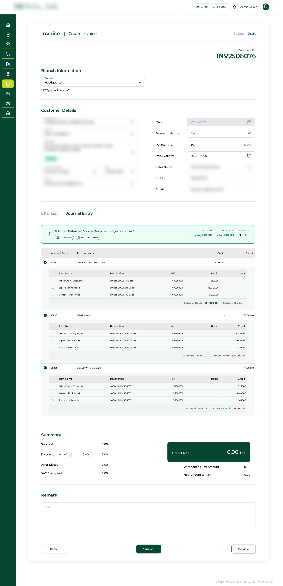
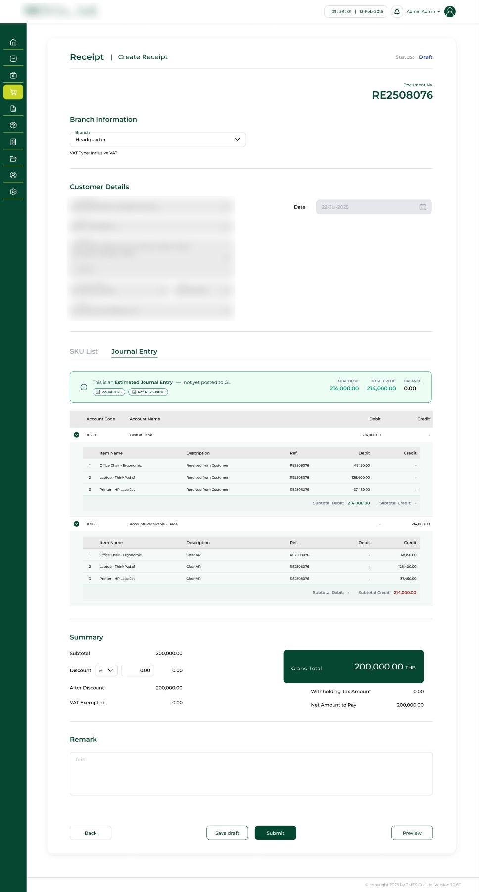
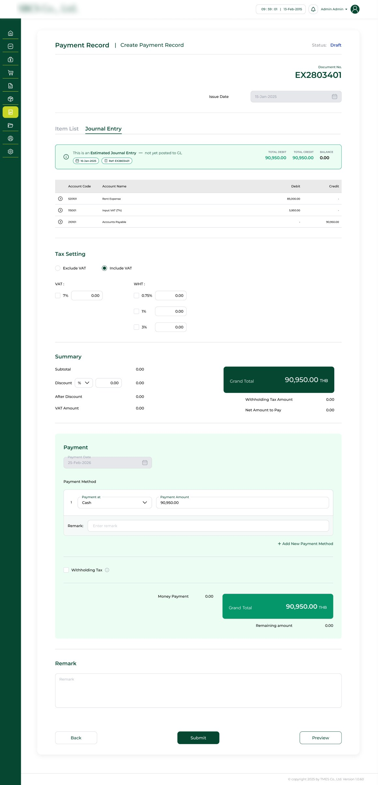
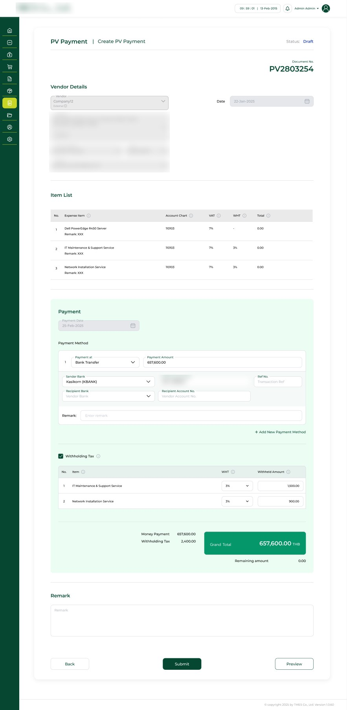
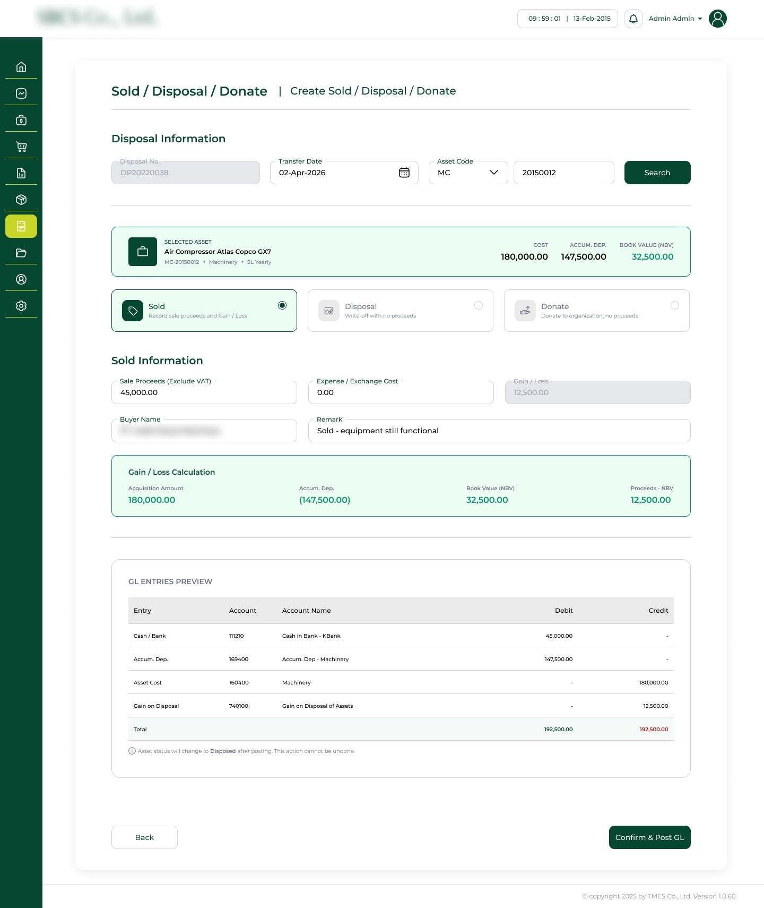
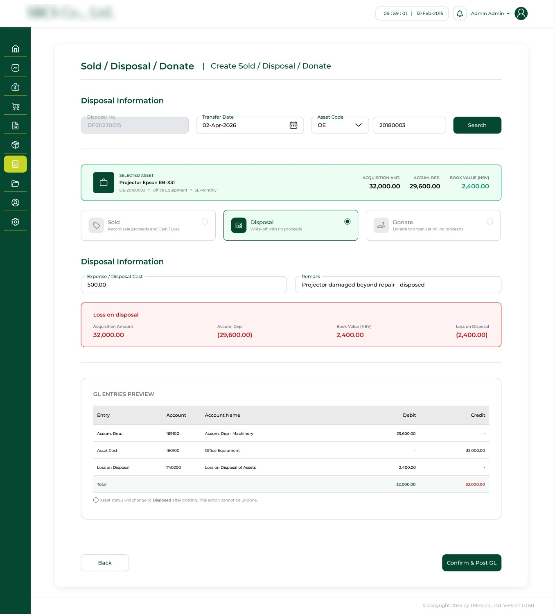

Case Study — 02
SBCS Accounting
System
A full accounting system for a client running a ten-year-old one, built by extending the BMS component set and designing the accounting-specific parts from scratch.
Context
SBCS is a client of TMES. They had run the same accounting system for about ten years and wanted it replaced. The client's requirements came with the project; the design work was mine alone.
BMS, TMES's main product, doesn't include a full accounting suite. TMES wanted to bring a complete one into BMS as part of this work, so the design had to serve SBCS now and fit BMS later.
Client branding is blurred and customer details are masked. Screens show sample data and are my version of the design.
Research
Neither I nor the team had deep accounting expertise, and access to the existing system was thin.
Partial view
I only saw the parts of the live system the client chose to open on screen.
Incomplete documents
The screenshots the client sent didn't cover everything, because of consent limits.
Long requirement sessions
Gathering requirements with the client took a long time, with the PM leading the conversations.
Learning the domain
I researched accounting practice myself to fill the gaps the client couldn't show me.
Decision
I met with the MD, the PM, and the developers involved to work out how the accounting system could merge into BMS cleanly. The question was which parts could reuse BMS patterns as they were, and which needed new design.
We kept the BMS form skeleton for every document and designed new components only where accounting needed something BMS never had.
Reuse vs New
Form skeleton
- Header with document number and status
- Branch and party sections
- Highlighted Grand Total block with Withholding Tax and Net Amount to Pay
- Remark, and a Back / Submit / Preview action bar
- Re-skinned to the client's colors
Accounting layer
- Journal Entry tab showing an estimated entry before posting
- Account Chart, VAT and WHT per line, with Debit and Credit
- Tax Setting and a Payment block with Remaining amount
- Asset disposal flow with gain / loss and a GL preview
Accounts Receivable
BMS-style documents with a new Journal Entry tab. Before anything posts, the user sees the estimated entry and whether it balances.


- Estimated Journal Entry banner: not yet posted to GL, with Total Debit, Total Credit and Balance
- Each account line expands to the items behind it, with a reference back to the document
- Sample invoice: Accounts Receivable debit 214,000 against Sales Revenue 200,000 and Output VAT 14,000, balanced at 0.00
- The receipt reverses it: cash at bank in, Accounts Receivable cleared by the same 214,000
Accounts Payable
Paying out needs more than a form: expense lines carry an account and tax, and payment needs bank details and withholding tax per item.


- Payment Record: each expense line has an Account Chart, VAT, WHT, Debit and Credit, plus Tax Setting (Include / Exclude VAT, WHT 0.75 / 1 / 3%)
- Sample record: rent expense 85,000 and input VAT 5,950 against Accounts Payable 90,950, balanced
- PV Payment: payment by bank transfer with sender and recipient bank fields and a reference number
- Withholding Tax opens a per-item table; two items at 3% withhold 1,500 and 900, 2,400 in total
Fixed Asset Disposal
A flow BMS had no equivalent for. It starts from a search, then shows what the entry will do to the books before the user confirms.


- Search by asset code; an empty state explains what to do first
- Selected asset shows Cost, Accumulated Depreciation and Book Value (NBV)
- Sold, Disposal or Donate is one choice, and the form below changes with it
- Gain or loss is calculated for the user: sold at 45,000 against book value 32,500 gives a 12,500 gain, shown in green; a write-off shows its loss in red
- GL Entries Preview balances before posting, with a note that posting can't be undone; a read-only record view keeps who updated it and when
Review & Handoff
The designs were delivered. They have since been revised by other people; the screens here are the version I made.
Outcome & Reflection
- Designs delivered for three accounting areas: AR, AP and Fixed Asset, covering seven document flows (Customer Invoice, Receipt, Revenue Record, Vendor Invoice, PV Payment, Payment Record, Sold / Disposal / Donate)
- All flows share the BMS form skeleton, so they fit into BMS later
- No measured results or client feedback to report yet
What I'd do next. I'd test the journal and disposal flows with working accountants. I designed them without full sight of the old system, so their feedback is the missing check.